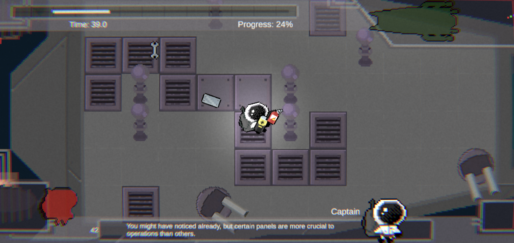

Week 7 - Alpha Milestone
This week marked a major milestone for the development of AstrOh-No!, as our team has successfully completed the alpha milestone for the game.
What We Worked On
After weeks of prototyping and testing core mechanics, we now have a structured level with clear progression, gameplay flow, and improved feedback systems. The level now follows the intended pacing structure, beginning with a lighter tutorial-like opening before ramping up into more chaotic gameplay waves. As described in our design documentation, the game revolves around maintaining the ship under continuous pressure, where threats such as asteroids, enemies, and ship damage constantly force the player to react and prioritize repairs in order to survive.A major focus this week was polishing the gameplay experience. Our programmers implemented sound effects and audio feedback, which significantly improved the feel of player actions. Repairs now produce satisfying audio cues, while impacts and other events give the player clearer feedback about what is happening in the environment. These additions make the core loop of repairing the ship, fighting enemies, and managing hazards feel more responsive and rewarding. In addition, the user interface has been expanded and refined, including clearer health indicators, visual alerts for damaged ship modules, and more readable gameplay information so players can quickly understand the state of the ship during chaotic moments.

First Level of AstrOh-No!
Alongside these improvements, the team continued refining gameplay systems and mechanics. The interactions between tools, enemies, and ship modules are now functioning more smoothly, helping reinforce the intended gameplay loop where players must balance movement, combat, and repairs at the same time. Visual polish and level layout adjustments have also helped improve readability and navigation around the ship, making it easier for players to identify problems and respond quickly.Next Steps
With the first level now completed and the game feeling much closer to a finished experience, our focus for the next milestone will be continuing to polish the game and expand its content. This includes refining the difficulty ramp, improving visual clarity even further, and potentially implementing additional environmental hazards and enemy behaviors. As AstrOh-No! continues to evolve, we will build upon this first completed level to create the remaining stages and bring the full experience together.← Back to Weekly Blogs